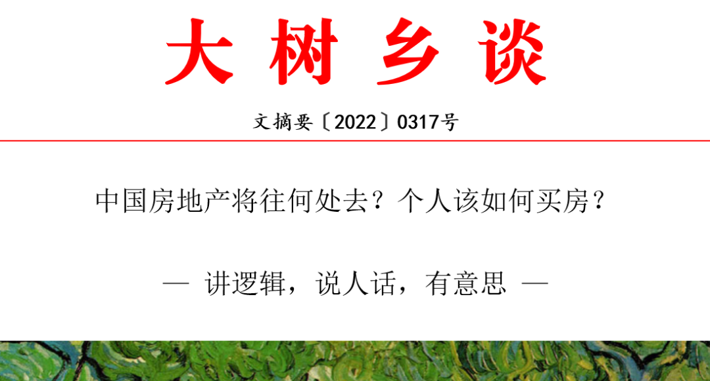
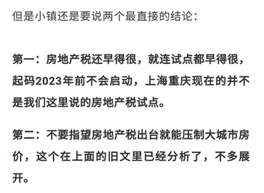
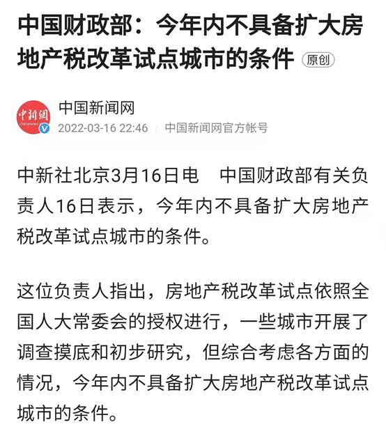

2022年中国房地产政策、房价及个人选择

对普通人来说，房产是一个人一生至关重要的选择，说关系到一生也不为过，尤其在一个国家仍然处于变革和发展的阶段。 中国家庭资产七成以上是房产，一些网上流传的30多岁财富自由的，不管是真实还是编造的，往往核心都是早年买了核心城市的房产。 当然，时代已经变了，随便买、随便涨的时代已经过去了，“房住不炒”必然是未来长期坚持的基本国策，绝不会动摇。2021年是旧时代的终结，而2022年将是中国房地产新时代的第一年。 但转型不意味着以后就不需要买房了、更不意味着房价不涨了。
恰恰相反，个人反而更需要了解政策、了解房产，要付出更多的心思和努力才能让买房促进个人发展。然而令人遗憾的是，买房这样一个占用资金极大、对人生影响极为重大的事，太多的人竟然严重缺乏学习，很容易被各种言论、诱导带进一个又一个坑。 小镇此前写过很多与房地产有关的文章，有两篇之前已经转到了“大树乡谈”这个号，大家可以简单回看下。 2021年12月6日，《房地产要松绑？》，小镇认为：2022年的房地产行业监管一定会松一松，也会有更多的资金进入房地产业，但是“松一松”绝不是松绑，“房住不炒”的基调不变。 2021年10月24日，《房地产要试点了？别急》谈房地产税试点的一些具体工作流程和难点。
在之前的10月20日，小镇在原来“大树乡长”这个号上发了一篇文章《从香港看中国房地产的未来》，这篇大家就不要再付费阅读了。一是“大树乡长”已经被账号所有方收回了，付费了也与小镇无关；二是那一篇重点是谈香港，今天这篇会更加深入、更直接，没有必要去看5个月前的。 需要说明的是，在去年10月的这篇文章里，小镇明确说：房地产税还早得很，就连试点都早得很，起码2023年前不会启动。

3天后全国人大常委会第三十一次会议授权国务院在部分地区开展房地产税改革试点，当时还有朋友留言嘲笑小镇被打脸了。 小镇真的被打脸了吗？ 2022年3月16日，财政部明确表示：今年内不具备扩大房地产税改革试点城市的条件。

花了一些时间，简单回顾了下小镇此前的一些旧文。接下来进入正题，今天小镇会把一些话说的很透，肯定有用，但估计会让人不舒服，也会举一些实践的例子，谈一些具体方法，这些不想扩大阅读面，免得招来各种事端，所以大家一切自愿。 今天的内容包括：1、房地产到底是什么，如何正确理解并判断？2、中国房地产政策将如何调整？3、房价未来会是什么走势？4、个人该如何买房：避坑和一些方法
接下来内容有9000多字，可以慢慢看，有疑问的话留言，小镇再起文详细解答。另外每位有1个赠送名额，系统限制只能有1个。